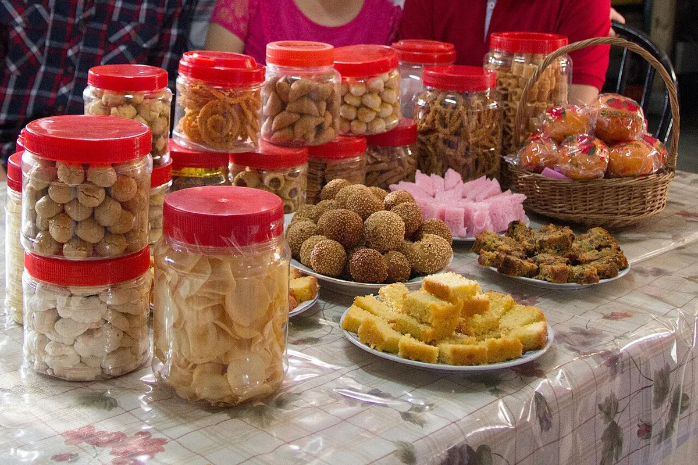
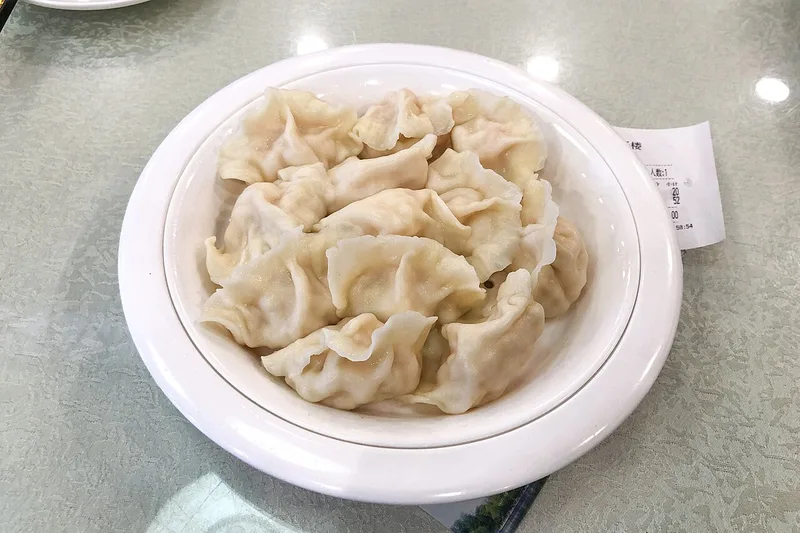
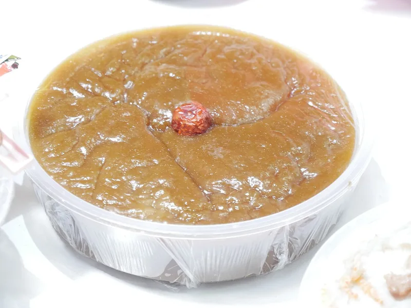
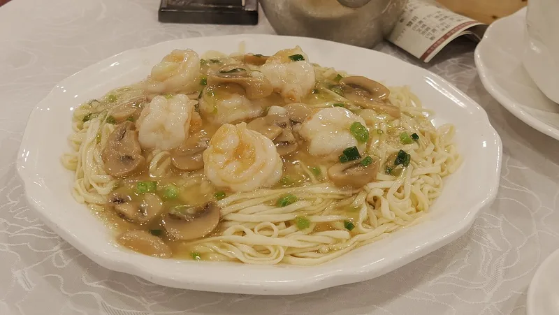
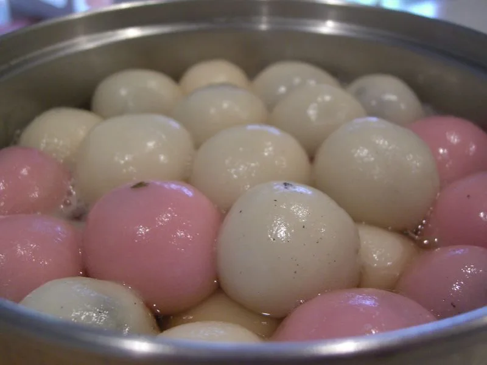

Festival Guide
Lucky Foods for Chinese New Year and What They Mean
At Chinese New Year, many dishes on the table carry a wish: fish for plenty, dumplings for wealth, long noodles for a long life. Here is what the traditional lucky foods are said to mean, why so many meanings come from words that sound alike, and how to plan a menu for Lunar New Year on 6 February 2027.

Why food carries wishes
Food is at the heart of Chinese New Year, and many dishes are chosen not only for their taste but for what they are said to bring in the year ahead.
Much of the meaning comes from language. “Several of the Chinese food names are homophones for words that also mean good things,” Wikipedia's article on Chinese New Year explains. The word for fish, yu, sounds like the word for surplus, and the gao of nian gao, the New Year rice cake, sounds like “high”.
Other foods carry meaning through their shape. Dumplings are said to resemble the silver ingots once used as money, fried spring rolls look like bars of gold, and round sweet rice balls stand for a family reunited.
These are traditions, not promises, and each family and region keeps its own mix of dishes and meanings.
The reunion dinner
The most important meal is the reunion dinner on New Year's Eve, when the family gathers, usually at or near the home of the most senior relative. Wikipedia describes it as large and sumptuous, traditionally with pork, chicken and fish, and most reunion dinners also feature a communal hot pot, a sign of the family coming together for the meal.
Some families serve eight dishes, because the number eight is associated with good fortune. Fish is usually on the table but not finished: the rest is kept overnight, so that something is left over as the new year begins, in keeping with the wish for surplus every year.
In 2027, New Year's Eve falls on Friday 5 February, the last day of the twelfth lunar month in the Hong Kong Observatory's calendar table.
Lucky foods at a glance
The table sums up the meanings most often given. Many of the puns work in Mandarin; some work best in southern Chinese languages, such as Teochew, where Wikipedia notes that the words for tangerine and luck are both pronounced “gik”.
| Food | Traditional meaning | Why |
|---|---|---|
| Fish (yu) | Surplus, plenty every year | Yu sounds like the word for surplus |
| Dumplings (jiaozi) | Wealth | Shaped like old silver ingots |
| Spring rolls (chunjuan) | Wealth | Fried golden, they look like gold bars |
| Nian gao (rice cake) | A higher, more prosperous year | Gao (cake) sounds like “high” |
| Long noodles | Long life | Served uncut; their length stands for life |
| Sweet rice balls (tangyuan) | Family togetherness | Their round shape stands for reunion |
| Mandarin oranges, tangerines | Luck, success, wealth | Their names echo the words for luck and success |
| Whole chicken | Good luck, a good beginning and end | Ji (chicken) sounds like the word for luck |
| Tray of sweets | Generosity and welcome | Each sweet carries its own wish |
Fish, dumplings and spring rolls
Fish is the classic dish of the reunion dinner. Because yu sounds like surplus, the saying nian nian you yu wishes for “surplus every year”. Great British Chefs explains that the fish is often served whole, with head and tail, for wholeness and a good beginning and end, and that part of it is saved for the next day.
Dumplings (jiaozi) belong above all to northern China, where it is customary to make them for New Year's Eve and eat them at midnight. Their shape is said to resemble the ingots called sycee, so they stand for wealth. Some cooks hide a surprise in the filling: Wikipedia mentions coins, dates and candy, with dates said to promise a flourishing year and candy sweet days ahead.
Spring rolls (chunjuan) carry a similar wish. Fried until golden, they are said to look like gold bars, according to China Highlights, which notes that they are especially popular in eastern China and in Cantonese dim sum.

Nian gao, long noodles and sweet rice balls
Nian gao, the sticky New Year cake made from glutinous rice flour, is a wish for progress. Its name suggests “a more prosperous year”, or “getting higher year by year”: better income, position, business or studies, China Highlights says. In the south of China, families make it and give it to relatives and friends.
Long noodles stand for a long life. Families may serve them uncut, as long as they can make them, because their length represents the eater's life. China Highlights notes that in northern China these longevity noodles are eaten on New Year's Day.
Sweet rice balls (tangyuan) are glutinous rice balls served in a sweet soup, and they symbolise family togetherness. Their round shape is linked with reunion, as in the phrase tuan tuan yuan yuan. They are the main food of the Lantern Festival on the fifteenth day, though in southern China they are eaten throughout the festival.



Oranges and the tray of sweets
Mandarin oranges and tangerines are exchanged between families as a courtesy, a symbol of wealth and good luck, Wikipedia notes. Their names carry the wish: the word for orange, cheng, sounds like the word for success, and one way of writing ju, tangerine, contains the character for ji, luck. Great British Chefs adds that fruit with its leaves still on is a wish for relationships that stay secure.
Visitors are often welcomed with a box of sweets. Wikipedia describes a red or black candy box for sweets and dried fruit. In Cantonese homes it is the chuen hup, the tray of togetherness: a lacquered box with, normally, an auspicious eight compartments, as Cathay Pacific's magazine explains, and every household fills it in its own way. Great British Chefs gives one traditional set of meanings:
- Candied melon: good health and growth
- Kumquat: prosperity
- Coconut: togetherness
- Red melon seeds: joy and sincerity
- Peanuts: long life
- Lotus seeds: many children
Other lists differ a little: Cathay Pacific's writer links nuts with long life and candied coconut with a harmonious family. These are family customs, not fixed rules.
Regional differences, and Cambodia
The New Year table changes with the region. In northern China, dumplings at midnight are the classic. In the south, nian gao and mandarin oranges are central, and reunion dinners may feature wax-cured duck, Chinese sausage, lobster and abalone, according to Wikipedia. China Highlights mentions lion's head meatballs in Shanghai, for strength and family unity, and shrimp in Cantonese homes, because ha sounds like laughter.
Many families in China still eat only vegetarian food on the first day of the new year, and Buddha's delight, a vegetarian dish, is served on the eve and on the first day. In Malaysia and Singapore, the seventh day is the day for yusheng, a tossed raw fish salad eaten for continued wealth and prosperity.
In Cambodia, a Phnom Penh Post report from 2014 described Cambodian-Chinese families loading their tables with fruit, the most important being a variety of orange known as khwik, alongside soup, fried dishes, chicken or duck, cured pork, dried squid and boiled eggs, shared by the whole family after prayers. Many Buddhist Cambodian-Chinese, the report said, avoid meat on the first day of the new year, believing that it promotes long life.
Planning your 2027 menu
Lunar New Year 2027 falls on Saturday 6 February, starting the Year of the Fire Goat. If you would like to follow the traditions, here is how the main food days line up in the Hong Kong Observatory's calendar table:
- Friday 5 February 2027, New Year's Eve: the reunion dinner, with fish to leave a little over, dumplings if your family follows the northern custom, and perhaps a hot pot.
- Saturday 6 February 2027, New Year's Day: a vegetarian meal for families who keep that custom, long noodles served uncut, and oranges and a tray of sweets for visitors.
- Friday 12 February 2027, the seventh day: yusheng, for families in Malaysia and Singapore and those who follow their custom.
- Saturday 20 February 2027, the Lantern Festival: sweet rice balls to close the celebrations.
You do not need every dish: choose a few whose meanings matter to your family. For the customs of the whole festival, see our Lunar New Year guide and Chinese New Year 2027.
Frequently asked questions
What foods are eaten at Chinese New Year?
Traditional favourites include fish, dumplings, spring rolls, nian gao (rice cake), long noodles, sweet rice balls (tangyuan) and mandarin oranges, with a tray of sweets for visitors. The dishes vary by region and by family.
Why is fish eaten at Chinese New Year?
In Mandarin, the word for fish, yu, sounds like the word for surplus, so fish is a wish for plenty every year. Many families leave some of the fish until the next day.
What does nian gao mean?
Nian gao is a sticky cake made from glutinous rice flour. Gao sounds like the word for high, so the name suggests a higher, more prosperous year.
Why are noodles not cut at New Year?
Long noodles stand for a long life, so they are traditionally served uncut, as long as possible.
When is the reunion dinner in 2027?
On New Year's Eve, Friday 5 February 2027. Lunar New Year's Day is Saturday 6 February 2027, and the Lantern Festival is Saturday 20 February 2027.
Sources and further reading
- Wikipedia: “Chinese New Year” — the reunion dinner, its hot pot and eight dishes, fish left over, the homophones behind fish, nian gao and tangerines (including Teochew), dumplings at midnight in northern China, uncut noodles, sweet rice balls, oranges as gifts, the candy box, vegetarian food on the first day, regional dishes and yusheng on the seventh day.
- China Highlights: “12 Lucky Chinese New Year Foods” — the sayings for fish, nian gao and sweet rice balls, dumplings as silver ingots, spring rolls as gold bars, longevity noodles on New Year's Day in the north, tangyuan in the south, oranges and success, whole chicken, lion's head meatballs and shrimp.
- Great British Chefs: “Lunar New Year: the story behind the food” (Amy Lo) — whole fish with head and tail and part saved for the next day, fruit with leaves, and the meanings of the sweets in the tray.
- Cathay Pacific: “Chuen hup – the tray of togetherness” (Adam White, 1 February 2024) — the chuen hup, its usual eight compartments and the meanings of nuts and candied coconut.
- The Phnom Penh Post (Post Plus): page on Chinese New Year, family, food and prosperity — Cambodian-Chinese New Year tables, the khwik orange, and avoiding meat on the first day.
- Hong Kong Observatory: Gregorian-Lunar Calendar Conversion Table of 2027 — New Year's Eve on 5 February, the first day on 6 February, the seventh day on 12 February and the fifteenth day on 20 February 2027.
Food meanings are traditions that vary by family and region, dates follow the Hong Kong Observatory's 2027 calendar table, and photos are from Wikimedia Commons under the free licences named under each picture.
Explore more: Lunar New Year guide · Chinese New Year 2027 · Goat, Sheep or Ram? · Khmer New Year and the animal year
← Back to the MyBirthSign Blogមគ្គុទ្ទេសក៍ពិធីបុណ្យ
ម្ហូបសំណាងសម្រាប់ចូលឆ្នាំចិន និងអត្ថន័យរបស់វា
នៅបុណ្យចូលឆ្នាំចិន ម្ហូបជាច្រើននៅលើតុ មានក្ដីប្រាថ្នាមួយនៅក្នុងនោះ៖ ត្រីសម្រាប់ភាពបរិបូរណ៍ ខ្ចៅសម្រាប់ទ្រព្យសម្បត្តិ មីវែងសម្រាប់អាយុវែង។ ខាងក្រោមនេះជាអត្ថន័យ ដែលគេនិយាយថាម្ហូបសំណាងតាមប្រពៃណីនីមួយៗនាំមក ហេតុអ្វីបានជាអត្ថន័យជាច្រើនកើតចេញពីពាក្យដែលមានសំឡេងស្រដៀងគ្នា និងរបៀបរៀបចំម្ហូបសម្រាប់ចូលឆ្នាំចិន ថ្ងៃទី 06/02/2027។
ហេតុអ្វីម្ហូបមានក្ដីប្រាថ្នា
ម្ហូបអាហារ ជាបេះដូងនៃបុណ្យចូលឆ្នាំចិន ហើយម្ហូបជាច្រើនត្រូវបានជ្រើសរើស មិនមែនត្រឹមតែដោយសាររសជាតិប៉ុណ្ណោះទេ ប៉ុន្តែក៏ដោយសារអ្វីដែលគេនិយាយថា វានាំមកក្នុងឆ្នាំថ្មីផងដែរ។
អត្ថន័យភាគច្រើនកើតចេញពីភាសា។ អត្ថបទស្ដីពីចូលឆ្នាំចិនរបស់ Wikipedia ពន្យល់ថា «ឈ្មោះម្ហូបចិនជាច្រើន មានសំឡេងដូចពាក្យដែលមានន័យល្អៗ»។ ពាក្យ «ត្រី» គឺ yu មានសំឡេងដូចពាក្យ «សល់» ហើយពាក្យ gao ក្នុង nian gao ដែលជានំអង្ករដំណើបសម្រាប់ចូលឆ្នាំ មានសំឡេងដូចពាក្យ «ខ្ពស់»។
ម្ហូបផ្សេងទៀតមានអត្ថន័យតាមរយៈរាងរបស់វា។ គេនិយាយថា ខ្ចៅមានរាងស្រដៀងនឹងដុំប្រាក់ ដែលគេធ្លាប់ប្រើជាលុយកាលពីសម័យមុន ណែមចៀនមើលទៅដូចដុំមាស ហើយនំដំណើបមូលផ្អែម តំណាងឱ្យគ្រួសារដែលបានជួបជុំគ្នាវិញ។
ទាំងនេះជាប្រពៃណី មិនមែនជាការសន្យាទេ ហើយគ្រួសារ និងតំបន់នីមួយៗ មានម្ហូប និងអត្ថន័យរៀងៗខ្លួន។
អាហារជុំគ្រួសារ
អាហារសំខាន់ជាងគេ គឺអាហារជុំគ្រួសារនៅយប់ចូលឆ្នាំ ពេលសមាជិកគ្រួសារមកជួបជុំគ្នា ជាធម្មតានៅផ្ទះ ឬនៅជិតផ្ទះរបស់សាច់ញាតិដែលចាស់ជាងគេ។ Wikipedia ពិពណ៌នាថា អាហារនេះធំ និងបរិបូរណ៍ ដែលតាមប្រពៃណីមានសាច់ជ្រូក សាច់មាន់ និងត្រី ហើយអាហារជុំគ្រួសារភាគច្រើន ក៏មានឆ្នាំងភ្លើង (hot pot) ហូបរួមគ្នាផងដែរ ជាសញ្ញានៃការជួបជុំគ្នារបស់គ្រួសារ ដើម្បីហូបអាហារជាមួយគ្នា។
គ្រួសារខ្លះរៀបចំម្ហូបប្រាំបីមុខ ព្រោះលេខប្រាំបីត្រូវបានគេភ្ជាប់ទៅនឹងសំណាងល្អ។ ជាធម្មតា មានត្រីនៅលើតុ ប៉ុន្តែគេមិនហូបអស់ទេ៖ គេទុកត្រីដែលនៅសល់ពេញមួយយប់ ដើម្បីឱ្យមានអ្វីមួយនៅសល់ពេលឆ្នាំថ្មីចាប់ផ្ដើម ស្របនឹងក្ដីប្រាថ្នាឱ្យមានសល់រៀងរាល់ឆ្នាំ។
នៅឆ្នាំ 2027 យប់ចូលឆ្នាំធ្លាក់ចំថ្ងៃសុក្រ 05/02/2027 ដែលជាថ្ងៃចុងក្រោយនៃខែទីដប់ពីរតាមចន្ទគតិ ក្នុងតារាងប្រតិទិនរបស់ Hong Kong Observatory។
សង្ខេបម្ហូបសំណាង
តារាងខាងក្រោមសង្ខេបអត្ថន័យ ដែលគេនិយាយញឹកញាប់ជាងគេ។ ការលេងពាក្យភាគច្រើន ប្រើបានក្នុងភាសាចិនកុកងឺ ប៉ុន្តែខ្លះទៀតប្រើបានល្អជាងក្នុងភាសាចិនភាគខាងត្បូង ដូចជាភាសាចិនតាជីវ (Teochew) ដែល Wikipedia កត់សម្គាល់ថា ពាក្យ «ក្រូច tangerine» និងពាក្យ «សំណាង» សុទ្ធតែបញ្ចេញសំឡេងថា «gik»។
| ម្ហូប | អត្ថន័យតាមប្រពៃណី | មូលហេតុ |
|---|---|---|
| ត្រី (yu) | ភាពលើសលប់ មានសល់រៀងរាល់ឆ្នាំ | Yu មានសំឡេងដូចពាក្យ «សល់» |
| ខ្ចៅ (jiaozi) | ទ្រព្យសម្បត្តិ | មានរាងដូចដុំប្រាក់បុរាណ |
| ណែមចៀន (chunjuan) | ទ្រព្យសម្បត្តិ | ពេលចៀនលឿង វាមើលទៅដូចដុំមាស |
| នំ nian gao (នំអង្ករដំណើប) | ឆ្នាំដែលខ្ពស់ជាងមុន និងរុងរឿងជាងមុន | Gao (នំ) មានសំឡេងដូចពាក្យ «ខ្ពស់» |
| មីវែង | អាយុវែង | គេមិនកាត់វា ព្រោះប្រវែងរបស់វាតំណាងឱ្យជីវិត |
| នំដំណើបមូលផ្អែម (tangyuan) | ការរួបរួមក្នុងគ្រួសារ | រាងមូលរបស់វា តំណាងឱ្យការជួបជុំ |
| ក្រូចម៉ង់ដារីន ក្រូចតង់ហ្សេរីន | សំណាង ភាពជោគជ័យ ទ្រព្យសម្បត្តិ | ឈ្មោះរបស់វា ស្រដៀងនឹងពាក្យ «សំណាង» និង «ជោគជ័យ» |
| មាន់មួយក្បាលទាំងមូល | សំណាងល្អ ការចាប់ផ្ដើម និងការបញ្ចប់ល្អ | Ji (មាន់) មានសំឡេងដូចពាក្យ «សំណាង» |
| ថាសនំស្ករគ្រាប់ | ចិត្តសទ្ធា និងការស្វាគមន៍ | នំនីមួយៗ មានក្ដីប្រាថ្នារៀងៗខ្លួន |
ត្រី ខ្ចៅ និងណែមចៀន
ត្រី ជាម្ហូបបុរាណនៃអាហារជុំគ្រួសារ។ ដោយសារពាក្យ yu មានសំឡេងដូចពាក្យ «សល់» ពាក្យស្លោក nian nian you yu ជាការជូនពរឱ្យ «មានសល់រៀងរាល់ឆ្នាំ»។ Great British Chefs ពន្យល់ថា គេតែងរៀបចំត្រីទាំងមូល មានទាំងក្បាល និងកន្ទុយ ដើម្បីតំណាងឱ្យភាពពេញលេញ និងការចាប់ផ្ដើម និងការបញ្ចប់ល្អ ហើយគេទុកត្រីមួយចំណែក សម្រាប់ថ្ងៃបន្ទាប់។
ខ្ចៅ (jiaozi) ជាម្ហូបសំខាន់ជាពិសេសនៅភាគខាងជើងប្រទេសចិន ដែលមានទម្លាប់ធ្វើខ្ចៅសម្រាប់យប់ចូលឆ្នាំ ហើយហូបនៅពាក់កណ្ដាលអធ្រាត្រ។ គេនិយាយថា រាងរបស់វាស្រដៀងនឹងដុំប្រាក់បុរាណ ដែលគេហៅថា sycee ដូច្នេះវាតំណាងឱ្យទ្រព្យសម្បត្តិ។ អ្នកធ្វើម្ហូបខ្លះ លាក់របស់អ្វីមួយក្នុងស្នូល៖ Wikipedia និយាយអំពីកាក់ ផ្លែពុទ្រាស្ងួត (dates) និងស្ករគ្រាប់ ដែលគេនិយាយថា ផ្លែពុទ្រានាំឱ្យឆ្នាំរីកចម្រើន ហើយស្ករគ្រាប់នាំឱ្យថ្ងៃខាងមុខផ្អែមល្ហែម។
ណែមចៀន (chunjuan) មានក្ដីប្រាថ្នាស្រដៀងគ្នា។ យោងតាម China Highlights ពេលចៀនរហូតលឿង គេនិយាយថា វាមើលទៅដូចដុំមាស ហើយវាពេញនិយមជាពិសេស នៅភាគខាងកើតប្រទេសចិន និងក្នុងអាហារ dim sum របស់ជនជាតិចិនកន្តាំង (Cantonese)។
នំ nian gao មីវែង និងនំដំណើបមូលផ្អែម
Nian gao ជានំស្អិតសម្រាប់ចូលឆ្នាំ ធ្វើពីម្សៅអង្ករដំណើប និងជាក្ដីប្រាថ្នាសម្រាប់ការរីកចម្រើន។ យោងតាម China Highlights ឈ្មោះរបស់វាមានន័យថា «ឆ្នាំដែលរុងរឿងជាងមុន» ឬ «ខ្ពស់ឡើងៗពីមួយឆ្នាំទៅមួយឆ្នាំ»៖ ប្រាក់ចំណូល តួនាទី មុខរបរ ឬការសិក្សាល្អប្រសើរជាងមុន។ នៅភាគខាងត្បូងប្រទេសចិន គ្រួសារនានាធ្វើនំនេះ ហើយយកទៅជូនសាច់ញាតិ និងមិត្តភក្តិ។
មីវែង តំណាងឱ្យអាយុវែង។ គ្រួសារខ្លះរៀបចំមីដោយមិនកាត់ ឱ្យវែងតាមដែលអាចធ្វើបាន ព្រោះប្រវែងរបស់វាតំណាងឱ្យជីវិតរបស់អ្នកហូប។ China Highlights កត់សម្គាល់ថា នៅភាគខាងជើងប្រទេសចិន គេហូបមីអាយុវែងនេះ នៅថ្ងៃចូលឆ្នាំ។
នំដំណើបមូលផ្អែម (tangyuan) ជាគ្រាប់ម្សៅដំណើបមូលៗ ក្នុងទឹកស្ករ ហើយវាជានិមិត្តរូបនៃការរួបរួមក្នុងគ្រួសារ។ រាងមូលរបស់វាត្រូវបានភ្ជាប់ទៅនឹងការជួបជុំ ដូចក្នុងឃ្លា tuan tuan yuan yuan។ វាជាម្ហូបសំខាន់នៃបុណ្យគោម នៅថ្ងៃទីដប់ប្រាំ ប៉ុន្តែនៅភាគខាងត្បូងប្រទេសចិន គេហូបវាពេញមួយរដូវបុណ្យ។
ក្រូច និងថាសនំស្ករគ្រាប់
យោងតាម Wikipedia ក្រូចម៉ង់ដារីន និងក្រូចតង់ហ្សេរីន ត្រូវបានគ្រួសារនានាជូនគ្នាទៅវិញទៅមកជាការគួរសម ជានិមិត្តរូបនៃទ្រព្យសម្បត្តិ និងសំណាងល្អ។ ឈ្មោះរបស់វាមានក្ដីប្រាថ្នានៅក្នុងខ្លួន៖ ពាក្យ «ក្រូច» គឺ cheng មានសំឡេងដូចពាក្យ «ជោគជ័យ» ហើយរបៀបសរសេរមួយនៃពាក្យ ju (ក្រូច tangerine) មានតួអក្សរ ji ដែលមានន័យថា «សំណាង»។ Great British Chefs បន្ថែមថា ផ្លែក្រូចដែលនៅមានស្លឹកជាប់ ជាក្ដីប្រាថ្នាឱ្យទំនាក់ទំនងនៅរឹងមាំ។
ភ្ញៀវតែងត្រូវបានស្វាគមន៍ដោយប្រអប់នំស្ករគ្រាប់។ Wikipedia ពិពណ៌នាអំពីប្រអប់ស្ករគ្រាប់ពណ៌ក្រហម ឬខ្មៅ សម្រាប់ដាក់ស្ករគ្រាប់ និងផ្លែឈើស្ងួត។ នៅក្នុងផ្ទះរបស់ជនជាតិចិនកន្តាំង គេហៅវាថា chuen hup ឬ «ថាសនៃការរួបរួម»៖ ជាប្រអប់លាបល័ក្ខ ដែលជាធម្មតាមានប្រាំបីប្រឡោង ជាចំនួនដ៏មានសិរីមង្គល ដូចដែលទស្សនាវដ្ដីរបស់ Cathay Pacific ពន្យល់ ហើយផ្ទះនីមួយៗដាក់របស់ក្នុងប្រអប់តាមរបៀបរៀងៗខ្លួន។ Great British Chefs ផ្ដល់អត្ថន័យតាមប្រពៃណីមួយបែប ដូចខាងក្រោម៖
- ត្រឡាចខះស្ករ (candied melon)៖ សុខភាពល្អ និងការលូតលាស់
- ក្រូចគុមក្វាត (kumquat)៖ ភាពរុងរឿង
- ដូង៖ ការរួបរួម
- គ្រាប់ឪឡឹកពណ៌ក្រហម៖ សេចក្ដីរីករាយ និងភាពស្មោះត្រង់
- សណ្ដែកដី៖ អាយុវែង
- គ្រាប់ឈូក៖ កូនចៅច្រើន
បញ្ជីផ្សេងទៀតខុសគ្នាបន្តិចបន្តួច៖ អ្នកនិពន្ធរបស់ Cathay Pacific ភ្ជាប់គ្រាប់ធញ្ញជាតិ (nuts) ទៅនឹងអាយុវែង និងដូងខះស្ករ ទៅនឹងគ្រួសារដែលមានសុខដុមរមនា។ ទាំងនេះជាទំនៀមទម្លាប់គ្រួសារ មិនមែនជាច្បាប់តឹងរ៉ឹងទេ។
ភាពខុសគ្នាតាមតំបន់ និងនៅកម្ពុជា
តុអាហារចូលឆ្នាំ ប្រែប្រួលទៅតាមតំបន់។ នៅភាគខាងជើងប្រទេសចិន ខ្ចៅនៅពាក់កណ្ដាលអធ្រាត្រ ជាម្ហូបបុរាណ។ យោងតាម Wikipedia នៅភាគខាងត្បូង នំ nian gao និងក្រូចម៉ង់ដារីន ជារបស់សំខាន់ ហើយអាហារជុំគ្រួសារអាចមានទាងៀត សាច់ក្រកចិន បង្កងសមុទ្រ (lobster) និងខ្យងសមុទ្រ abalone។ China Highlights និយាយអំពីប្រហិតសាច់ធំៗ ដែលគេហៅថា «ក្បាលតោ» នៅទីក្រុងសៀងហៃ ដែលតំណាងឱ្យកម្លាំង និងការរួបរួមក្នុងគ្រួសារ និងបង្គានៅក្នុងផ្ទះរបស់ជនជាតិចិនកន្តាំង ព្រោះពាក្យ ha មានសំឡេងដូចសំណើច។
គ្រួសារជាច្រើននៅប្រទេសចិន នៅតែហូបតែម្ហូបបួសប៉ុណ្ណោះ នៅថ្ងៃដំបូងនៃឆ្នាំថ្មី ហើយម្ហូបបួសមួយមុខ ដែលគេហៅថា Buddha's delight ត្រូវបានរៀបចំនៅយប់ចូលឆ្នាំ និងនៅថ្ងៃដំបូង។ នៅប្រទេសម៉ាឡេស៊ី និងសិង្ហបុរី ថ្ងៃទីប្រាំពីរ ជាថ្ងៃហូប yusheng ដែលជាសាឡាត់ត្រីឆៅ ដែលគេកូរលើកឡើងៗ ដើម្បីឱ្យមានទ្រព្យសម្បត្តិ និងភាពរុងរឿងជាបន្តបន្ទាប់។
នៅកម្ពុជា របាយការណ៍របស់កាសែត The Phnom Penh Post ឆ្នាំ 2014 បានពិពណ៌នាថា គ្រួសារកម្ពុជាដែលមានដើមកំណើតចិន រៀបចំតុពោរពេញដោយផ្លែឈើ ដែលសំខាន់ជាងគេ គឺក្រូចមួយប្រភេទដែលគេហៅថា khwik រួមជាមួយស្ល ម្ហូបចៀន សាច់មាន់ ឬសាច់ទា សាច់ជ្រូកងៀត មឹកងៀត និងពងស្ងោរ ដែលសមាជិកគ្រួសារទាំងអស់ហូបជាមួយគ្នា បន្ទាប់ពីការបន់ស្រន់។ របាយការណ៍ដដែលនិយាយថា អ្នកកាន់ព្រះពុទ្ធសាសនាជាច្រើន ក្នុងចំណោមជនកម្ពុជាដែលមានដើមកំណើតចិន ជៀសវាងការហូបសាច់នៅថ្ងៃដំបូងនៃឆ្នាំថ្មី ដោយជឿថាវាជួយឱ្យមានអាយុវែង។
រៀបចំម្ហូបសម្រាប់ឆ្នាំ 2027
ចូលឆ្នាំចិនឆ្នាំ 2027 ធ្លាក់ចំថ្ងៃសៅរ៍ 06/02/2027 ដែលជាថ្ងៃចាប់ផ្ដើមឆ្នាំមមែ ធាតុភ្លើង។ បើអ្នកចង់អនុវត្តតាមប្រពៃណី ខាងក្រោមនេះជាថ្ងៃសំខាន់ៗសម្រាប់ម្ហូបអាហារ តាមតារាងប្រតិទិនរបស់ Hong Kong Observatory៖
- ថ្ងៃសុក្រ 05/02/2027 យប់ចូលឆ្នាំ៖ អាហារជុំគ្រួសារ ដោយមានត្រីទុកឱ្យសល់បន្តិច ខ្ចៅ បើគ្រួសាររបស់អ្នកអនុវត្តតាមទម្លាប់ភាគខាងជើង និងប្រហែលជាឆ្នាំងភ្លើងមួយ។
- ថ្ងៃសៅរ៍ 06/02/2027 ថ្ងៃចូលឆ្នាំ៖ អាហារបួស សម្រាប់គ្រួសារដែលរក្សាទម្លាប់នោះ មីវែងដែលមិនកាត់ និងក្រូច ព្រមទាំងថាសនំស្ករគ្រាប់សម្រាប់ភ្ញៀវ។
- ថ្ងៃសុក្រ 12/02/2027 ថ្ងៃទីប្រាំពីរ៖ yusheng សម្រាប់គ្រួសារនៅម៉ាឡេស៊ី និងសិង្ហបុរី និងអ្នកដែលអនុវត្តតាមទម្លាប់របស់ពួកគេ។
- ថ្ងៃសៅរ៍ 20/02/2027 បុណ្យគោម៖ នំដំណើបមូលផ្អែម ដើម្បីបិទបញ្ចប់ពិធីបុណ្យ។
អ្នកមិនចាំបាច់រៀបចំគ្រប់មុខម្ហូបទេ៖ សូមជ្រើសរើសម្ហូបពីរបីមុខ ដែលអត្ថន័យរបស់វាសំខាន់សម្រាប់គ្រួសាររបស់អ្នក។ សម្រាប់ទំនៀមទម្លាប់នៃពិធីបុណ្យទាំងមូល សូមអាន មគ្គុទ្ទេសក៍ចូលឆ្នាំចិន និង ចូលឆ្នាំចិន 2027 របស់យើង។
សំណួរដែលគេសួរញឹកញាប់
តើគេហូបម្ហូបអ្វីខ្លះ នៅបុណ្យចូលឆ្នាំចិន?
ម្ហូបពេញនិយមតាមប្រពៃណី រួមមានត្រី ខ្ចៅ ណែមចៀន នំ nian gao (នំអង្ករដំណើប) មីវែង នំដំណើបមូលផ្អែម (tangyuan) និងក្រូចម៉ង់ដារីន ព្រមទាំងថាសនំស្ករគ្រាប់សម្រាប់ភ្ញៀវ។ ម្ហូបទាំងនេះខុសគ្នាតាមតំបន់ និងតាមគ្រួសារ។
ហេតុអ្វីគេហូបត្រីនៅបុណ្យចូលឆ្នាំចិន?
ក្នុងភាសាចិនកុកងឺ ពាក្យ «ត្រី» គឺ yu មានសំឡេងដូចពាក្យ «សល់» ដូច្នេះត្រីជាក្ដីប្រាថ្នាឱ្យមានបរិបូរណ៍រៀងរាល់ឆ្នាំ។ គ្រួសារជាច្រើនទុកត្រីមួយចំណែក សម្រាប់ថ្ងៃបន្ទាប់។
នំ nian gao មានន័យដូចម្ដេច?
Nian gao ជានំស្អិត ធ្វើពីម្សៅអង្ករដំណើប។ ពាក្យ gao មានសំឡេងដូចពាក្យ «ខ្ពស់» ដូច្នេះឈ្មោះរបស់វាមានន័យថា ឆ្នាំដែលខ្ពស់ជាងមុន និងរុងរឿងជាងមុន។
ហេតុអ្វីគេមិនកាត់មីនៅពេលចូលឆ្នាំ?
មីវែងតំណាងឱ្យអាយុវែង ដូច្នេះតាមប្រពៃណី គេរៀបចំមីដោយមិនកាត់ ឱ្យវែងតាមដែលអាចធ្វើបាន។
អាហារជុំគ្រួសារឆ្នាំ 2027 ធ្លាក់ចំថ្ងៃណា?
នៅយប់ចូលឆ្នាំ ថ្ងៃសុក្រ 05/02/2027។ ថ្ងៃចូលឆ្នាំចិន គឺថ្ងៃសៅរ៍ 06/02/2027 ហើយបុណ្យគោម គឺថ្ងៃសៅរ៍ 20/02/2027។
ប្រភព និងឯកសារអានបន្ថែម
- Wikipedia: “Chinese New Year” — អាហារជុំគ្រួសារ ឆ្នាំងភ្លើង និងម្ហូបប្រាំបីមុខ ត្រីដែលទុកឱ្យសល់ ពាក្យដែលមានសំឡេងដូចគ្នានៅពីក្រោយត្រី នំ nian gao និងក្រូច tangerine (រួមទាំងភាសាចិនតាជីវ) ខ្ចៅនៅពាក់កណ្ដាលអធ្រាត្រនៅភាគខាងជើងប្រទេសចិន មីដែលមិនកាត់ នំដំណើបមូលផ្អែម ក្រូចជាអំណោយ ប្រអប់ស្ករគ្រាប់ ម្ហូបបួសនៅថ្ងៃដំបូង ម្ហូបតាមតំបន់ និង yusheng នៅថ្ងៃទីប្រាំពីរ។
- China Highlights: “12 Lucky Chinese New Year Foods” — ពាក្យស្លោកសម្រាប់ត្រី នំ nian gao និងនំដំណើបមូលផ្អែម ខ្ចៅដូចដុំប្រាក់ ណែមចៀនដូចដុំមាស មីអាយុវែងនៅថ្ងៃចូលឆ្នាំនៅភាគខាងជើង tangyuan នៅភាគខាងត្បូង ក្រូច និងភាពជោគជ័យ មាន់ទាំងមូល ប្រហិត «ក្បាលតោ» និងបង្គា។
- Great British Chefs: “Lunar New Year: the story behind the food” (Amy Lo) — ត្រីទាំងមូល មានក្បាល និងកន្ទុយ ហើយទុកមួយចំណែកសម្រាប់ថ្ងៃបន្ទាប់ ផ្លែឈើដែលមានស្លឹកជាប់ និងអត្ថន័យនៃនំស្ករគ្រាប់ក្នុងថាស។
- Cathay Pacific: “Chuen hup – the tray of togetherness” (Adam White, 1 February 2024) — ប្រអប់ chuen hup ប្រឡោងប្រាំបីដែលវាមានជាធម្មតា និងអត្ថន័យនៃគ្រាប់ធញ្ញជាតិ និងដូងខះស្ករ។
- The Phnom Penh Post (Post Plus): page on Chinese New Year, family, food and prosperity — តុអាហារចូលឆ្នាំរបស់គ្រួសារកម្ពុជាដែលមានដើមកំណើតចិន ក្រូច khwik និងការជៀសវាងសាច់នៅថ្ងៃដំបូង។
- Hong Kong Observatory: Gregorian-Lunar Calendar Conversion Table of 2027 — យប់ចូលឆ្នាំ ថ្ងៃទី 05/02/2027 ថ្ងៃដំបូង ថ្ងៃទី 06/02/2027 ថ្ងៃទីប្រាំពីរ ថ្ងៃទី 12/02/2027 និងថ្ងៃទីដប់ប្រាំ ថ្ងៃទី 20/02/2027។
អត្ថន័យនៃម្ហូបអាហារ ជាប្រពៃណីដែលខុសគ្នាតាមគ្រួសារ និងតាមតំបន់ កាលបរិច្ឆេទអនុវត្តតាមតារាងប្រតិទិនឆ្នាំ 2027 របស់ Hong Kong Observatory ហើយរូបថតមកពី Wikimedia Commons ក្រោមអាជ្ញាប័ណ្ណសេរី ដែលបានបញ្ជាក់នៅក្រោមរូបនីមួយៗ។
អានបន្ថែម៖ មគ្គុទ្ទេសក៍ចូលឆ្នាំចិន · ចូលឆ្នាំចិន 2027 · ពពែ ចៀម ឬចៀមឈ្មោល? · ចូលឆ្នាំខ្មែរ និងឆ្នាំសត្វ
← ត្រឡប់ទៅប្លុក MyBirthSign